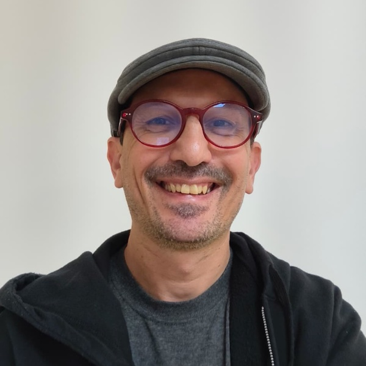
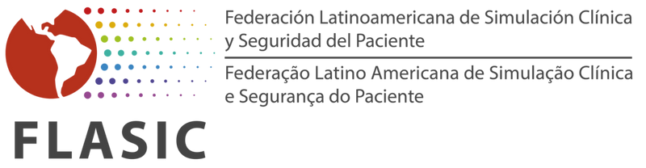

Docentes clínicos
Faculty universitario y de programas de residencia que facilita debriefings con aprendices.
Cinco meses para llevar tus debriefings al siguiente nivel: marco Steinwachs como armazón, PEARLS y TALK como variantes con propósito, y ~14 semanas de retroalimentación frecuente asistida por IA sobre tus propios debriefings reales.
La mayoría de quienes facilitamos debriefings recibimos formación en uno o dos talleres, y casi nunca recibimos retroalimentación estructurada sobre nuestra práctica real. El resultado es predecible: debriefings que se reducen a feedback, ruptura de seguridad psicológica, preguntas cerradas que cortan la reflexión.
Este curso aborda esa brecha con un programa de cinco meses: fundamentos teóricos sólidos, un taller sincrónico con coaching directo, y —el elemento diferenciador— ~14 semanas durante las cuales subes tus propios debriefings (audio, video o transcripción) y recibes retroalimentación asistida por IA evaluada contra el modelo de rúbrica específico de la técnica practicada.
La IA escala la retroalimentación específica. El Profesor Titular pone el juicio profesional en cada revisión. La calificación final siempre es humana.
Profesionales que ya facilitan debriefings y quieren consolidar su práctica con rigor metodológico y retroalimentación frecuente. No es un curso introductorio.
Faculty universitario y de programas de residencia que facilita debriefings con aprendices.
Con experiencia base en debriefing en centros de simulación, CESIM y simuladoras propias.
Coordinadores de educación médica continua que conducen debriefings como parte de su rol.
Médicos que conducen debriefings post-evento real en urgencias, quirófano o UCI.
Residentes con responsabilidad docente que ya facilitan debriefings con sus aprendices.
Cohortes cerradas para centros de simulación, programas de residencia y hospitales. Descuentos institucionales disponibles.
Prerrequisito: haber facilitado al menos un debriefing previo (formal o informal), acceso recurrente durante los 4 meses de Fase 3 a escenarios donde grabar debriefings, y consentimiento institucional cuando aplique para subir material con fines formativos.
Competencias operativas demostradas con entregables reales. Lo que prometemos en L1 y L2 de Kirkpatrick, no aspiraciones.
Diseñar y conducir debriefings con la estructura Descripción → Análisis → Aplicación como columna vertebral consistente.
Seleccionar y aplicar el marco adecuado según el contexto: PEARLS educativo, PEARLS clínico (HCE), Steinwachs/Diamond o TALK.
Construir y mantener seguridad psicológica como condición no negociable (Edmondson; Rudolph et al.) durante toda la sesión.
Anatomía de la pregunta abierta. Advocacy-inquiry. Cómo evitar preguntas cerradas o sugestivas que cortan la reflexión.
Explicitar y compartir tus juicios con respeto y rigor (Rudolph et al.), en lugar de aparentar una neutralidad imposible.
Subir 4 debriefings propios a lo largo de ~14 semanas y leer críticamente la retroalimentación IA + humana para mejorar de bloque a bloque.
Fase 1 conceptos. Fase 2 estructura + taller sincrónico. Fase 3 (~14 semanas, el corazón del curso) reforzamiento con retroalimentación IA + revisión humana. Fase 4 evaluación sumativa.
Consolidas la base conceptual del debriefing como práctica educativa distinta del feedback y la evaluación. Comprendes por qué funciona, bajo qué condiciones, y manejas con criterio los principios para abrir y sostener una conversación reflexiva.
Cada módulo incluye video de pre-work (15–20 min), lectura corta curada, quiz de comprensión y un ejercicio aplicado de microescritura.
Interiorizas la estructura de Steinwachs (Descripción → Análisis → Aplicación) como columna vertebral del debriefing y la pones en práctica en un taller sincrónico de grupos pequeños con coaching directo del facilitador.
Día y horario fijo de la sesión sincrónica se confirma al cierre de inscripciones.
Subes debriefings reales o simulados de tu propia facilitación (audio, video o transcripción) y recibes retroalimentación frecuente asistida por IA. La evaluación no usa una rúbrica única estandarizada: cada entregable se evalúa contra el modelo de rúbrica específico de la técnica practicada, con pesos por dimensión definidos según los objetivos del ejercicio.
El plugin mod_debriefingai procesa tu material (audio mp3/m4a/wav, video mp4/webm o transcripción txt/docx), transcribe con Whisper si es necesario y evalúa con Claude contra el modelo de rúbrica seleccionado. El informe estructurado llega en horas, no semanas. El Profesor Titular revisa después y agrega los matices que la IA no captura.
Consolidas y articulas tu aprendizaje en un ensayo reflexivo final (2,500–4,000 palabras) sobre dos ejes: cómo concibes el debriefing tras el curso (marcos integrados, retos), y reflexión sobre tu propio aprendizaje (qué debriefings sirvieron de inflexión, qué retroalimentación marcó la diferencia).
Dimensiones de la rúbrica: etapas del debriefing · modelos mentales · selección de técnica · ejemplos de preguntas · seguridad psicológica.
Steinwachs es el armazón. PEARLS educativo, PEARLS-HCE clínico, Steinwachs/Diamond y TALK son marcos con propósito específico que se montan sobre esa misma estructura.
La estructura clásica: Descripción → Análisis → Aplicación. Se enseña como columna vertebral del debriefing. Todo lo demás se monta sobre este armazón.
Promoting Excellence and Reflective Learning in Simulation. Variante educativa: reacciones → descripción → análisis → resumen. Seis dimensiones evaluadas con pesos ajustables.
Variante para eventos clínicos reales. Suma tres dimensiones: seguridad del paciente, trabajo en equipo clínico, carga cognitiva y sesgos. Manejo emocional post-evento.
Cuatro dimensiones explícitas: descripción-cómo se sintieron, descripción-qué pasó, análisis-por qué pasó, aplicación-qué harías diferente. Cuándo conviene frente a Steinwachs clásico.
TALK clinical debriefing para sesiones breves apoyadas en video. Cinco dimensiones: video como disparador, advocacy-inquiry, gestión de reacciones, cierre de aprendizaje, gestión técnica del video.
Atraviesan todas las fases. Debriefing con buen juicio (no existe el debriefing sin juicio). Seguridad psicológica como condición no negociable, evaluada explícitamente en cada entregable.
El instructor define los pesos por dimensión según los objetivos de cada ejercicio. Cualquier dimensión con peso ≥30% se marca como dimensión principal en el informe. No es una rúbrica única estandarizada (tipo DASH): es retroalimentación adaptada al ejercicio que estás practicando.
Mayoritariamente asincrónico (Moodle) con una sesión sincrónica de 3 h en Zoom durante Fase 2. Práctica distribuida en ~22 semanas, no taller concentrado.
Plataforma central del curso. Videos de pre-work, lecturas curadas, quizzes, foros moderados, entregables y calificación. Plugin propio mod_debriefingai para retroalimentación IA sobre tus debriefings y mod_essayrubric para la rúbrica oficial del ensayo final.
Una única sesión sincrónica de 3 horas durante la Fase 2. Grupos pequeños (4–5 por sala) con rotación de roles facilitador/aprendiz/observador, debriefings breves practicados en vivo, retroalimentación inmediata del facilitador titular y peer feedback estructurado.
El plugin mod_debriefingai está en piloto desde mayo de 2026 en moodle.simacademy.lat. Cuatro pasos automáticos, sin que tengas que hacer nada manual.
Audio (mp3, m4a, wav), video (mp4, webm) o transcripción (txt, docx). Material desidentificado siguiendo la política firmada al inicio del curso.
El audio o video se procesa con Whisper STT. Chunking automático para grabaciones largas. Si subes transcripción directa, este paso se omite.
Claude evalúa la transcripción contra el modelo de rúbrica del bloque (PEARLS, HCE, Steinwachs/Diamond o TALK) con pesos por dimensión definidos por el instructor.
Recibes informe IA con fortalezas, oportunidades de mejora con extractos específicos y preguntas socráticas. El Profesor Titular revisa y agrega los matices que la IA no captura. La calificación final es humana.

Médico · Director de SimAcademy y Emergencias
Más de 20 años en educación de profesionales de la salud con foco en simulación clínica, urgencias y paramedicina. Diseñador y desarrollador del plugin mod_debriefingai para Moodle (debriefing asistido por IA, en piloto desde mayo de 2026). Experiencia consolidada facilitando y formando debriefers en programas de simulación de México y Latinoamérica.
Línea de investigación activa en aplicaciones educativas y clínicas de inteligencia artificial en salud (ecosistema OpenClaw, MedExpert, Health Companion). Esa investigación alimenta directamente los casos, prompts y flujos que se trabajan durante la Fase 3 del curso.

Este curso está avalado por FLASIC (Federación Latinoamericana de Asociaciones de Simulación Clínica) bajo el No. de aprobación 2026.03. El aval refiere a la calidad y coherencia del diseño curricular del programa.
Constancia de aprovechamiento (~50 horas formativas) emitida en Moodle vía mod_customcert al cumplir los cinco criterios de acreditación.
Cupo limitado a 20 personas para mantener viable la revisión humana individualizada de cada debriefing. La cohorte se cierra al alcanzar el cupo. Día y horario fijo del taller sincrónico (Fase 2) se confirman al cierre de inscripciones. Consulta la política de cancelación.
No. Es un curso de profundización para quienes ya facilitan debriefings. El prerrequisito explícito es haber facilitado al menos un debriefing previo (formal o informal). Si nunca has facilitado, este no es el curso para empezar.
La Fase 3 requiere acceso recurrente a escenarios donde facilitar debriefings susceptibles de grabarse. Para participantes sin acceso a escenarios propios, se proveen casos simulados con aprendices voluntarios coordinados desde Moodle y opción de debriefing sobre cases-video provistos por el curso. Cuéntanos tu situación al inscribirte para confirmar viabilidad.
El curso establece una política firmada por cada participante al inicio: obligación de obtener consentimiento previo, desidentificación obligatoria antes de subir material, acceso restringido al participante + Profesor Titular + plugin de análisis, retención por la duración del curso + 6 meses y prohibición de subir grabaciones de eventos clínicos reales sin consentimiento expreso institucional y de pacientes.
No. La IA hace pre-evaluación contra el modelo de rúbrica para escalar la retroalimentación específica y rápida. La revisión humana del Profesor Titular agrega los matices que la IA no puede juzgar (interpersonal, contexto institucional) y la calificación final siempre es humana. El curso enseña explícitamente los límites del análisis automatizado.
El taller sincrónico requiere asistencia de al menos 90% del tiempo para acreditar la Fase 2. Tiene grabación de respaldo en Moodle dentro de 24 h, pero la grabación no sustituye la asistencia para fines de acreditación. Si tienes conflicto con la fecha que se confirme al cierre de inscripciones, contáctanos para evaluar alternativas.
La constancia de aprovechamiento (mod_customcert) se emite al cumplir los cinco criterios: (1) Fase 1: ≥3 de 4 quizzes y ≥3 de 4 ejercicios; (2) Fase 2: asistencia al taller ≥90% y entregable asincrónico completo; (3) Fase 3: ≥3 de 4 debriefings subidos en plazo con revisión completa; (4) Fase 4: ensayo final aprobado por el Profesor Titular; (5) cumplimiento de la política de confidencialidad y desidentificación.
Consulta la política completa de cancelaciones y reembolsos en simacademy.emergencias.com.mx/oferta-educativa/cancelaciones. Si tienes dudas específicas, escríbenos por WhatsApp antes de inscribirte.